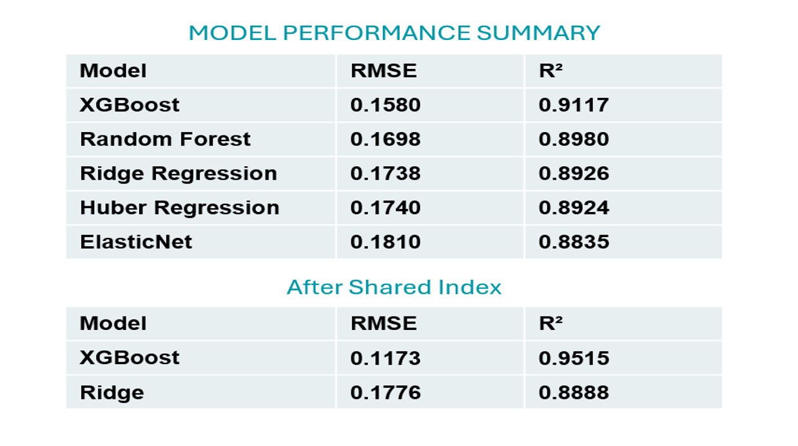
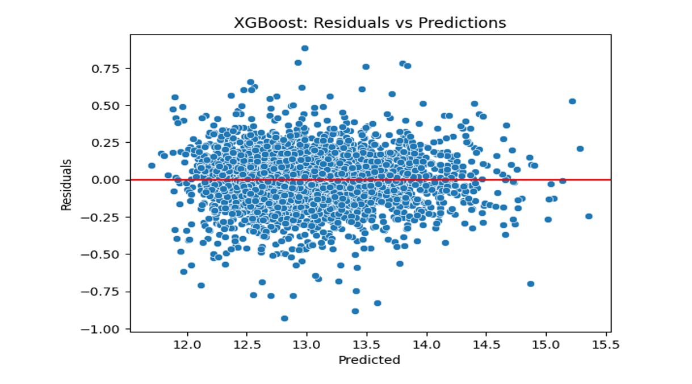
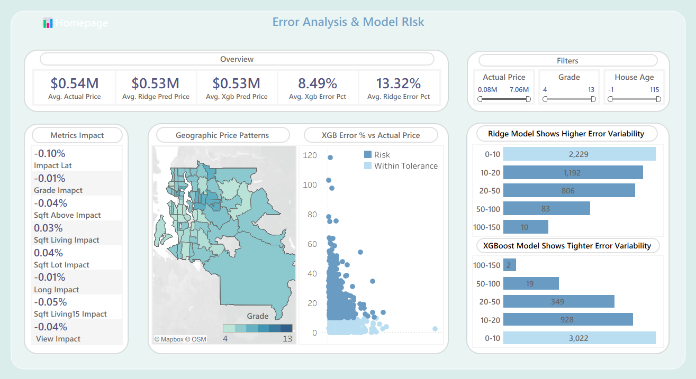

Project Overview
Residential property prices vary significantly based on location, house size, condition, and neighborhood characteristics.
This project helps investors and decision-makers estimate fair property values, understand pricing risk, and identify high-potential investment opportunities using historical housing data.
The analysis focuses on reducing uncertainty in property valuation and highlighting cases where renovation or mispricing can create strong returns.
Data
- Dataset: Residential housing sales data with ~21,000 property records.
- Target variable: Sales price.
- Granularity: Individual property-level transactions
Key Features
- Living area (sqft) and lot size.
- Number of bedrooms and bathrooms.
- Property condition, grade, and age.
- Location and neighborhood indicators.
- Waterfront and renovation-related attributes.
Data Challenges
- Presence of outliers in price, size, and age.
- High variance in smaller and very old properties.
- Strong non-linear relationships between features and price.
Initial analysis confirmed the dataset is suitable for predictive modeling and investment analysis.
Modeling & Statistical Validation
XGBoost Regression was selected as the primary predictive model due to its superior ability to capture complex, non-linear pricing patterns that traditional linear models could not handle effectively.
Ridge Regression was selected as an interpretable benchmark model to support business intelligence and stakeholder communication.
Tree-based models outperform linear approaches in terms of predictive accuracy, while regularised regression provides stability and interpretability.
Approach
- Conducted detailed Exploratory Data Analysis (EDA) to understand key price drivers.
- Applied log transformations to reduce skewness and stabilize variance.
- zipcode was encoded categorically to capture neighbourhood-level effect.
- Used OLS regression as a diagnostic tool to test feature significance and price drivers.
- Built and compared multiple regression models:
Models Compared
- Ridge Regression (baseline)
- Huber Regression
- ElasticNet Regression
- Random Forest Regression
- XGBoost Regression
Model Performance
- Models were evaluated using RMSE and R² to assess predictive accuracy and explanatory power.
- The final model balances accuracy and stability, making it suitable for real-world pricing and risk analysis.
- XGBoost delivered the highest accuracy after applying the shared index
- XGBoost-R²: 95.15%
- XGBoost-Rmse: 11.73%
- Ridge-R²: 88.88%
- Ridge-Rmse: 17.76%


Interactive Power BI Analytics
Power BI dashboards were developed to translate model outputs into clear, investment-focused insights.
Key capabilities include:
- Error and risk distribution analysis
- Size-based and age-based pricing uncertainty
- Renovation potential identification
- Tooltips explaining insights in plain language
The dashboards allow investors to explore risk and opportunity interactively rather than relying on static predictions.


Tableau – Model Validation
Tableau was used to validate model behavior on unseen data by:
- Comparing actual and predicted prices
- Checking error distribution across segments
- Ensuring results align with market logic
This step adds confidence before business use.


Key Insights
- Most properties are priced close to expectations, indicating a stable market.
- Pricing uncertainty increases for very small, very old, or unusual homes.
- Low-condition homes appear riskier due to low volume and high variation.
- Standard, well-maintained homes show more predictable pricing behavior.
- Properties that differ significantly from their neighborhood carry a higher risk.
- Low-condition homes with good location or large land often present renovation potential.
Business Recommendations
- Use renovation potential signals to identify undervalued properties.
- Focus renovation investments on low-condition homes with strong location fundamentals.
- Compare properties against neighborhood averages before purchase.
- Apply caution when investing in very small or very old homes.
- Prioritize standard property types for lower-risk investments.
- Use dashboards as a decision-support tool during acquisition screening.
Expected outcome: Improved pricing accuracy, better risk control, and higher ROI from renovation-driven investments.